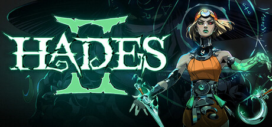
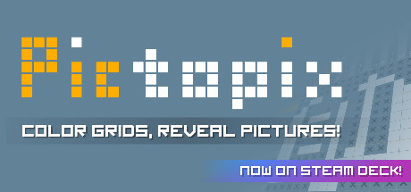
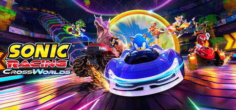

Most of the time, when I'm playing video games, I play them on on my PC. I do have a Nintendo Switch 2, but I really only use that for either new Nintendo releases or party games, so most of my hours are logged on Steam. Steam shows how much you've played certain games, so I figured I would write on what I've been playing for the past two weeks. Below I've included a table of the top 3 games I've been playing and how many hours I've logged, and then I'll go into a bit more detail.
| Game | Hours (Past Two Weeks) | Hours (Total) |
|---|---|---|
| Hades II | 28.2 | 45.2 |
| Pictopix | 12.9 | 15.9 |
| Sonic Racing Crossworlds | 5.5 | 15.9 |
Hades II just officially came out a week or two ago and I've been pretty addicted. The game was out in early access and I played it for a bit when it launched in early access (hence the extra hours even though the game came out within a two week span), but it's pretty much been the main thing I've been playing the past two weeks. I also own it on Switch because it has cross-saves, so when I went home for the weekend I logged a few hours on Switch that aren't represented here. Overall playing it has been a blast so far, there's a reason the first game was so critically acclaimed and this game largely does everything better.
This game is basically just a nonogram collection on Steam. The puzzles scale in a way that it actually teaches you how to play it, and I've been playing it in my spare time when I don't have enough time to play a full game or need to be paying half attention to something else. Each puzzle usually only takes around 10 minutes for the more complicated ones, and the simple ones can be done as quick as 15 seconds if you know what you're doing. It's a pretty fun game, it's pretty much just a typical nonogram game but it's nice to have it on Steam.
Sonic Racing Crossworlds also came out pretty recently, like Hades 2. Most of my time has been on the previous two games but I've still put a few hours into Crossworlds. I grew up on Mario Kart Wii and pretty much any racing game I've ever played has been a Mario Kart game (with the exception of a few hours of Forza), and playing a Sonic Racing game has been a pretty different experience. Honestly, the game is actually pretty fun, moreso than I thought it would be. A lot of people were debating whether this was going to be the better game compared to Mario Kart World, and I think this game does have a few pluses over MKW, though I think they each serve a different purpose and I'm not sure one replaces the other.
Anyway, that's what I've been up to in the gaming department the last couple of weeks. I've played a much larger variety of games to varying degrees but as previously stated, I've been dumping a ton of time into Hades II so it definitely takes the cake for the past two weeks.
My Monday begins by waking up to my alarm at 10 am. I usually snooze it for about 10 minutes before waking up and getting ready by brushing my teeth, washing my face, getting dressed, etc. By 10:30, I am waiting for my apartment's shuttle to come and bring me to campus, where I then head to my job at the Library's Digital Multimedia Center until 2 pm.
After finishing my shift at the library, I go to the International Center to grab lunch. The lines can be pretty long but generally I will either:
After finishing lunch I'll head to my 3 pm Level Design class, which lasts until 5 pm.
Post class I usually head back to the library to study/hangout with some friends at the library for a few hours until Weezer Club at 8 pm, which generally is around two hours long.
After Weezer Club, I usually grab a later dinner with my friends from the club and head home. When I get home, I take a shower and then hop online with some friends and we play video games. Some of the games we play include:
We usually play for a couple of hours, after which I head to bed, thus ending my Monday.